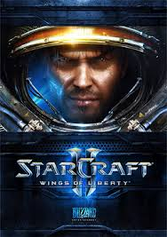
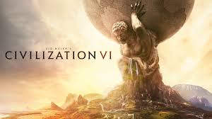
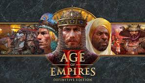
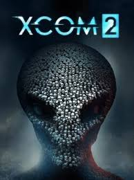

What are Strategy Games?
Strategy games are a genre that emphasizes skillful thinking and planning to achieve victory. Players must use their resources wisely and make tactical decisions to outsmart their opponents.
Types of Strategy Games
- Real-Time Strategy (RTS)
- Turn-Based Strategy (TBS)
- 4X Games (Explore, Expand, Exploit, Exterminate)
- Tower Defense
Popular Strategy Games
- StarCraft II
- Civilization VI
- Age of Empires II
- XCOM 2



